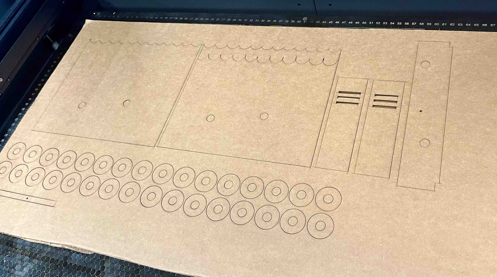
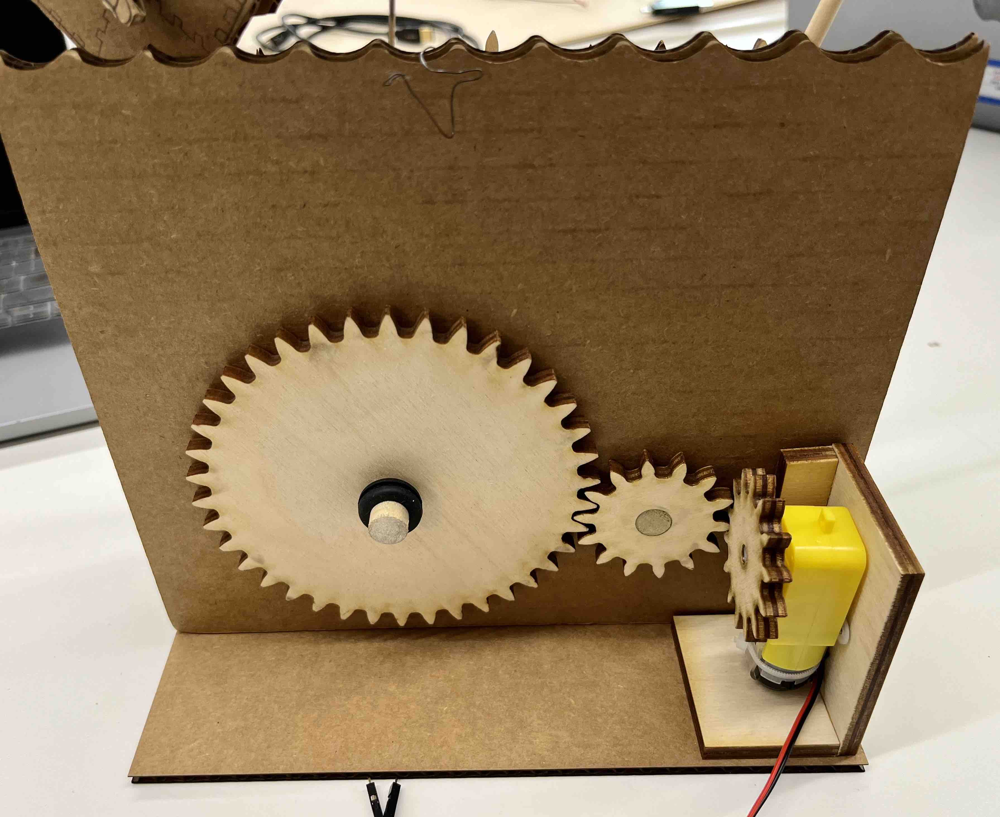
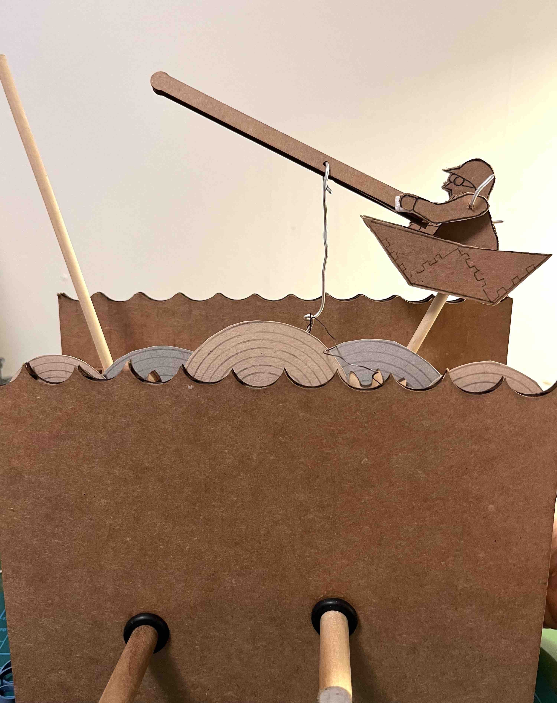

<br>
### Kinetic Sculpture
<h3>Catching and Executing on the Big Idea</h3>
During the 2D cutting project, I had stumbled across Cabaret Mechanical Theatre (https://cabaret.co.uk/) and was delighted by the whimsical kinetic sculptures. It was wonderful during our labs to get to play with their Automata Tinkering Kits.
For my kinetic sculpture, I was torn between a more narrative and whimsical piece versus an abstract sculpture. In the end, I decided I would find it personally more compelling to try to figure out how to construct a whimsical piece.
<figcaption>I started to sketch out some ideas of what I wanted my kinetic sculpture to look like. For me, it is important for there to be a concept behind my work, even if it may not be explicitly noted. </figcaption>
<img src="02_Kinetic_Different_Movement_Stark_Jun28.jpg" class="photo" alt="Motions for different types of mechanisms.">
<figcaption>I then started to break down the different mechanical movements that were part of the Automata Tinkering Kits. I figured this would hlep me understand the types of movement I could put into a sculpture. The sculpture I have done in the past had static armatures, whereas this one would need to move. I realized that this additional dimension of time to an otherwise 3D exercise is very hard to do well.</figcaption>
<img src="03_Kinetic_Sketch_Stark_Jun28.jpg" class="photo" alt="Initial sketches of ideas for the mechanical part of kinetic sculpture.">
<figcaption>Based on the prior two sketches, I tried to construct the mechanisms that would give me the desired motion in my automaton. I had not spent much time figuring out what I wanted the piece to look like since I had more confidence in the artistic part and because it was too complex to keep both components in my head.</figcaption>
<img src="04_Kinetic_SketchGears_Stark_Jun28.jpg" class="photo" alt="Another iteration of the mechanism.">
<figcaption>Another iteration of the mechanism, this time with a break down of the possible components I would need. In this version, I had used a pulley system to power two rotating shafts that would drive movement in the sculpture. </figcaption>
<img src="06_Kinetic_Cardboard_Stark_Jun29.jpg" class="photo" alt="Kinetic armature of my sculpture.">
<figcaption>I printed out a set of cardboard cams to play with. I made the silly mistake of not thinking more specifically about proportions and made some pretty large pieces. I had wanted to print a set of them in varying sizes; should have constrained the range and decreased the intervals.</figcaption>
<img src="07_Kinetic_WoodToy__Stark_Jun29.jpg" class="photo" alt="Back of kinetic armature.">
<figcaption>It was challenging to work out the mechanisms without a place to put the pieces on, so I went back to playing with the Automata Tinkering Kit to model out what my sketches would look like. I also reconsidered the pulley design. Since it required the friction of the wheels, it was not going to be as predictable as gears. I decided to switch to gears. This image is of the "front" of my kinetic structure; the "armature".</figcaption>
<img src="08_Kinetic_ToyProto_Stark_Jun29.jpg" class="photo" alt="Side view of kinetic armature.">
<figcaption>This is the back side. There were not large enough gears in the set to model what I wanted. However, I was able to turn the two pieces counter clockwise to see them in action. I also thought about "stacking" up different cams and devices to create more layered mechanisms.</figcaption>
<figcaption>This layering in the side view I realized was going to be hard and given it is not something I had experience with, I had no great mental model.</figcaption>
<img src="09_KineticSketchArt_Stark_Jun29.jpg" class="photo" alt="Refined sketch of the idea.">
<figcaption>That evening, I went home with a clearer view of the "armature" and spent the evening sketching possible ideas for the sculpture. I started with the concept of a bicycle, but thought it was too small of a jump from the circling gears. Also, given the gear mechnism, the two wheels would be going in the opposite direction - maybe a comical bicycle! Finally I settled on this concept of "catching the big idea". </figcaption>
<img src="10_KineticSketchRefine_Stark_Jun30.jpg" class="photo" alt="Digital skin of automaton.">
<figcaption>The next morning, fresh from some sleep, I refined the sketch.</figcaption>
<figcaption>I took the graphite sketch onto my iPad and used Adobe Fresco to sketch out the "skin" of this kinetic sculpture. This is one possible version that is painted. However, I could also execute it with engraving...or mix the two methods. We will see. The result gave me more ideas including how the large gear in the back could also have fish swimming around. The vision for the automaton was getting clearer, and now I figured I needed to get back to the mechanics.</figcaption>
<img src="12_KineticDrawingBack_Stark_Jun30.jpg" class="photo" alt="CAD of gears">
<figcaption>The back sketch of the sculpture with estimate of the actual gears. I decided that the size I drew the sketch would be 1:1 to actual sculpture. Around this time I also stumbled upon Paul Spooners' sketches as part of his virtual exhibition here: https://cabaret.co.uk/exhibitions/virtual-exhibitions/paul-spooners-virtual-exhibition/sketchbook/. It was facinating seeing all of his process ahead of creating a sculpture.</figcaption>
<figcaption>I used the SpurGear plugin to create the gears. I had to do a few trial and error using cardboard to get the right size teeth on the gears. Based on my sketches, I knew the diameter I needed for each gear. Once I had what I wanted in cardboard, I printed it out on 6 mm wood since I knew it would be hard to mimic the gears out of cardboard for the turning.</figcaption>
<iframe class="video" src="https://www.youtube.com/embed/J8LLcqf4TdY" title="YouTube video player" frameborder="0" allow="accelerometer; autoplay; clipboard-write; encrypted-media; gyroscope; picture-in-picture; web-share" allowfullscreen></iframe>
<figcaption>Testing out the turning of the gears.</figcaption>
<figcaption>Wooden gears that were 2D cut. 1:1 scale to my drawing. </figcaption>
<img src="15_KineticCardboardProto_Jun30_Stark.jpg" class="photo" alt="First cardboard prototype.">
<figcaption>First cardboard prototype of the sculpture. From building this, I found some of the challenges with my design based on the layering of the gears and parts. Yes, it was late at night and I decided to use my ruler for part of it. I also didn't have access to the 2D cutter that was in the lab so I had to improvise on how accurate each part of the prototype was. However, it was a valuable exercise to identify some of the design flaws. I also realized the weight of each part was going to also impact its movement. </figcaption>
<img src="18_Kinetic_Engine_Stark_July1.jpg" class="photo" alt="Cardboard prototype two base.">
<figcaption>The next morning, I decided to build another iteration of the cardboard prototype. This time, I changed the based to allow for the motor as originally conceived. It would sit inside of the sculpture. </figcaption>
<img src="19_Stark_CatchBigIdea_Proto2_Top_Stark_July1.jpg" class="photo" alt="Side view of cardboard prototype 2.">
<figcaption>In this prototype, I became more mindful of the design of the different layers of cams, gears and parts I would make out of wood versus polycarbonate.</figcaption>
<figcaption>Fisher person, just because I thought it looked cut. Also because it made me think about how 3D I wanted to make the fisher person in the paper boat.</figcaption>
<figcaption>Midway through the process of building out the second cardboard prototype. Based on this prototype, started to rethink the design of the way the water and fish would move and how each part of it visually laid over one another. This element of feasibility of gear layers is not something I have had to consider in software engineering or art practice to date.</figcaption>
<img src="22_Kinetic_CatchBigIdea_Proto_v2_Stark_July1.jpg" class="photo" alt="Completed cardboard prototype two.">
<figcaption>This second prototype provided me with additional learnings on this project and made me appreciate the complexity of some of the design consideration with different parts moving. It is still not possible to test out some of the mechanisms as I did not have wires and was not yet using the square dowel for ensuring the pieces spun around. I will do this once I draw out the CAD and print all the pieces on a 2D cutter. It is challenging to get to the level of fidelity needed with just a pair of scissors and masking tape.</figcaption>
<figcaption>I do like kinetic sculptures that have at least all 5 out of the 6 sides to look at. I will need to consider something for hte back, but for now I will constrain my sculpture to the front view. But the notion that my sculpture reads more like a painting or film than a true sculpture is bothering me a bit...</figcaption>
<iframe class="video" src="https://www.youtube.com/embed/6WFDpVEzYCk" title="YouTube video player" frameborder="0" allow="accelerometer; autoplay; clipboard-write; encrypted-media; gyroscope; picture-in-picture; web-share" allowfullscreen></iframe>
<figcaption>Demo of the movement in cardboard prototype 3.</figcaption>
<img src="24_Kinetic_CatchBigIdea_Proto2_BackwWheel_Stark_July1.jpg" class="photo" alt="Back view with additional gears.">
<figcaption>I did play around a bit with how the proportions of the back can be altered with layering.</figcaption>
<img src="25_Kinetic_TopCardboardProto02_Stark_July1.jpg" class="photo" alt="Top of sculpture">
<figcaption>As I look at the sculpture from above to examine the layers, I came to the realization that perhaps the cams should sit between to two larger pieces and it would also bring greater stability to the design. It could also change my sculpture to give it a more overall feel. I need to think through this more and perhaps be a second phase as I sense a bit of scope creep set in...</figcaption>
<img src="26_Kinetic_SideLayerOrder_Stark_July1.jpg" class="photo" alt="Top of sculpture">
<figcaption>Spent some time thinking about the mechanical design of the sculpture. Decided it was better to have the cams between the two polycarbonate pieces. Also widened it and put some structure around the shafts to stablize them more.</figcaption>
</div>
<figcaption>A side view sketch.</figcaption>
</div>
<img src="27_Kinetic_CardboardPrototype5_Stark_July3.jpg" class="photo" alt="Top of sculpture">
<figcaption>Spent the morning cleaning up what I did last night so that I would be ready to go into the labs and build the parts with the 2D cutter.</figcaption>
</div>
<figcaption>Put about a 10 mm guard rail around the cam to prevent the shaft going into the fisherman to go off course. One of the hard lessons I learned the evening before. Just as measurements are probabilitic, so is the motion of a kinetic sculpture. Need to account for that variance; it is also what provides some of the charm of the piece...</figcaption>
</div>
<figcaption>Did the same thing for the round cam. In the next iteration, will need to spend more time on the motion of this part of the sculpture.</figcaption>
</div>
<figcaption>Wow, what a difference having a 2D laser cutter get the precision needed. Right are the "homemade cams", left are the ones from the 2D cutter. Also much faster!</figcaption>
</div>
<img src="30_Kinetic_CADWater_Stark_July3.jpg" class="photo" alt="Water structure">
<figcaption>Based on learnings from the past prototype, adjusted the dimensions of the structure and made it larger. I decided that I would constrain the size of the base once I figured out everything else. I also started to appreciate how the manufacturing process has made things so small. The smaller everything is, the more precise it needs to be.</figcaption>
</div>
<figcaption>2D cut the base so that I had a solid structure to build this fifth cardboard prototype. I will want to change it, but for now, it helps to hold the wood rods in place for all my gears and cams.</figcaption>
</div>
<iframe class="video" src="https://www.youtube.com/embed/O-VUMRxtrVg" title="YouTube video player" frameborder="0" allow="accelerometer; autoplay; clipboard-write; encrypted-media; gyroscope; picture-in-picture; web-share" allowfullscreen></iframe>
<figcaption>Progress...</figcaption>
<iframe class="video" src="https://www.youtube.com/embed/CXi7dLCzARY" title="YouTube video player" frameborder="0" allow="accelerometer; autoplay; clipboard-write; encrypted-media; gyroscope; picture-in-picture; web-share" allowfullscreen></iframe>
<figcaption>Now with the fisherman. I started another iteraction of using tape to continue to build on the previous progress.</figcaption>
<img src="32.5_Kinetic_DesignImprovementsforProto6_Stark_July4.jpg" class="photo" alt="Design improvements for prototype 6.">
<figcaption>Spent some time thinking about the learnings from prototype five to incorporate into my next iteration.</figcaption>
<figcaption>Based on the modifications I made the day before, I made adjustments to my CAD drawings. A few key modifications included the top of the water guardrails; instead of masking tape, this version will address it with a press fit. I also realized the spacing between the cams were important so that they didn't hit each other in operation, to take care of is I made 30 mm diameter cardboard "washers" with 10.9 mm holes to use as spacers. I also finally drew the fishing rod. If I get the mechanical aspects up to a certain standard, I'll make another iteration of the actual figures. What I loved about the automata sculptures I initially saw was the convergence of mechanical and artistic ingenuity so need to try to combine both. </figcaption>

<figcaption>Laser cut print out of the designs. </figcaption>
<figcaption>Pretty pleased with the way the gears are now working. Had to made some further adjustments to this sixth prototype. Gained new appreciation for the need to had some toleratnce into the design. Also how accurate the size of the guardrail holes and height of them. Slight changes to these would cause the shafts to get stuck or slide out. Finding the right angle, size of guardrail holes and height of them required some playing around with the actual prototype.</figcaption>
<figcaption>With prototype six, I've finally worked out a good part of the mechanical issues. The next step is get the motor attached.</figcaption>
<iframe class="video" src="https://www.youtube.com/embed/PadsiAjtems" title="YouTube video player" frameborder="0" allow="accelerometer; autoplay; clipboard-write; encrypted-media; gyroscope; picture-in-picture; web-share" allowfullscreen></iframe>
<figcaption>Demo of the mechanical aspect of this prototype.</figcaption>
<iframe class="video" src="https://www.youtube.com/embed/EX_s_JXTDwM" title="YouTube video player" frameborder="0" allow="accelerometer; autoplay; clipboard-write; encrypted-media; gyroscope; picture-in-picture; web-share" allowfullscreen></iframe>
<figcaption>I think the mechanical aspects of this kinetic sculpture is now surpassing its artistic merits. Need to spend some time on the latter to keep moving the bar up.</figcaption>
<figcaption>With prototype six, I've finally worked out a good part of the mechanical issues. The next step is get the motor attached.</figcaption>
<img src="36_Kinetic_NewFisherman_Stark_July4.jpg" class="photo" alt="Front View">
<figcaption>As endearing as the prototype fisherman was, I decided given the progress on the mechanical merits of this automaton to spend some time to update him. I have not decided if I want to keep him in cardboard cool or have him in color. After staring at cardboard for so long, it's starting to grow on me.</figcaption>
<iframe class="video" src="https://www.youtube.com/embed/JXbi709I78g" title="YouTube video player" frameborder="0" allow="accelerometer; autoplay; clipboard-write; encrypted-media; gyroscope; picture-in-picture; web-share" allowfullscreen></iframe>
<figcaption>Originally, I had planned for the motor to be within the sculpture. Since I moved the cams to the internal of the sculpture and also liked the participatory nature of turning a crank, I decided to move the motor to the exterior. After a few sketches I decided to put the motor in the back connected to a gear that is perpendicular to the ones in the back of the sculpture. </figcaption>
<figcaption>Case for the motor. I feel like I may have over built this!</figcaption>

<figcaption>Motor in place.</figcaption>

<figcaption>Prototypes of some water waves.</figcaption>
<iframe class="video" src="https://www.youtube.com/embed/ZtZdWRvSGb0" title="YouTube video player" frameborder="0" allow="accelerometer; autoplay; clipboard-write; encrypted-media; gyroscope; picture-in-picture; web-share" allowfullscreen></iframe>
<figcaption>Demo of gears behind the waves.</figcaption>
<img src="41_Kinetic_OctopusConcept_Stark_July5.jpg" class="photo" alt="Concepts for the Octopus">
<figcaption>Took into iPad to play around with left side of the sculpture. Still deciding on color vs monochromatic cardboard brown....</figcaption>
<figcaption>Turned my concept of the octopus on my digital adjustments to a prototype of it in my sculpture. Realized accounting for weight and friction caused by it in real life would impact the motion. Similar to earlier prototypes, for the octopus, less concerned about the way it looked for this round. </figcaption>
Given some of the requirements of my final project, I decided for the controlling of the motor, I'd switch to the ESP32 microcontroller. This involved downloading the proper libraries and setting the the Arduino IDE for this hardware.
After this, I set up a simple circuit to ensure power was going to the motor.
Instead of using a button as I did for the Soil Moisture Traffic Light, I decided to control the motor with a maintained SPDT switch that would turn on or off. I found a great tutorial on the switch here: https://learn.sparkfun.com/tutorials/button-and-switch-basics. I used the switch to either connect the circuit and make the motor move or break it so the motor would stop. I also used a potentiometer to adjust the resistence and thus the speed of the gears for the sculpture.
<figcaption>Drawing of the circuit for the motor and on/off switch on my automata sculpture.</figcaption>
<figcaption>Motor circuit set up in context of the sculpture.</figcaption>
<figcaption>Motor circuit set up.</figcaption>
<iframe class="video" src="https://www.youtube.com/embed/bcP4-BZ7EUg" title="YouTube video player" frameborder="0" allow="accelerometer; autoplay; clipboard-write; encrypted-media; gyroscope; picture-in-picture; web-share" allowfullscreen></iframe>
<figcaption>"He's alive! Alive!"</figcaption>
<figcaption>Had another idea on the composition of the Octopus. Decided to sketch it out on my iPad...</figcaption>
<figcaption>I wanted to push the idea of catching a big idea. Just as I barely reached the mark of where I had originally set my ambitions for this kinetic sculpture, I spent some more time on ideas for it using Adobe Fresco. In particular, I was not crazy about the blank cardboard bottom. While I somewhat liked the simplicity, I felt the overall piece didn't have enough magic. My original idea of having a clear case to see the inside gears was interesting, but I thought it was also not the most original idea. After reflecting on this idea of our life stories and idea of motion picture, I landed on this idea. With it comes excitment, trepidation...and so the hunt to execute this idea begins! If you are wondering what is on the right, it is a potential phenakistoscope. I had an inkling of this idea originally, but set it aside as I was wrestling down the simple mechanics of motion. Now, this dream has resurfaced. </figcaption>
<figcaption>Decided to sketch out the phenakistoscope prototype plans this morning. I could build a prototype separately for this part of the kinetic sculpture to see if it works before incorporating it into the rest of the sculpture. There is physical motion and perceived motion. I like the play on this idea of the "kinetic sculpture"!</figcaption>
As I was researching this history of phenakistoscopes, I found this cool video of some of the 3D animation people are doing with a successor of hte technology, zoetropes.
<iframe class="video" src="https://www.youtube.com/embed/40__creuq7c" title="YouTube video player" frameborder="0" allow="accelerometer; autoplay; clipboard-write; encrypted-media; gyroscope; picture-in-picture; web-share" allowfullscreen></iframe>
Modern take on the phenaistocopes: https://www.instructables.com/A-Modern-Take-on-the-Phenakistoscope/
</div>
</div>